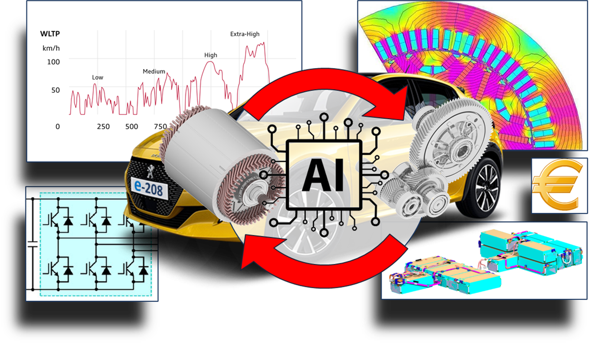
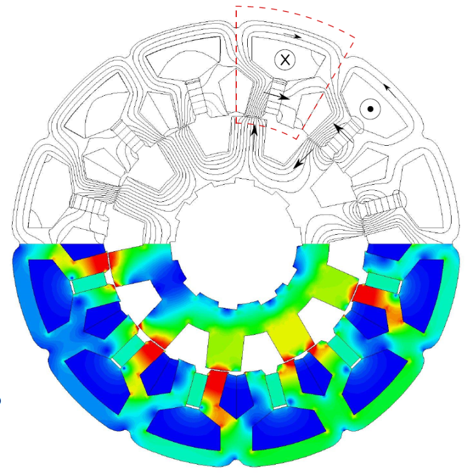

Logiciel
e-Pivot
Logiciel commun SATIE / Stellantis développé depuis 2017.
Une sélection de publications, brevets et faits marquants peut être mise en avant progressivement.

Logiciel commun SATIE / Stellantis développé depuis 2017.

Travaux sur la conception de stators de machines électriques.

Brevets récents sur les machines électriques et la traction fractionnée.